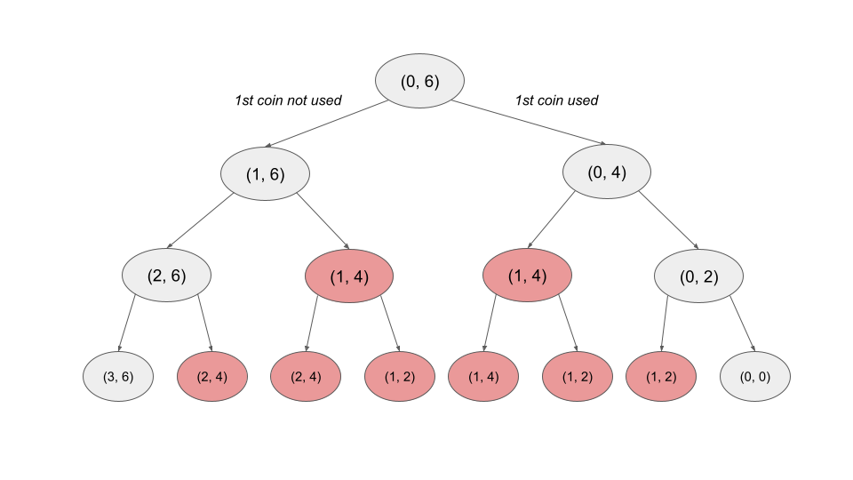
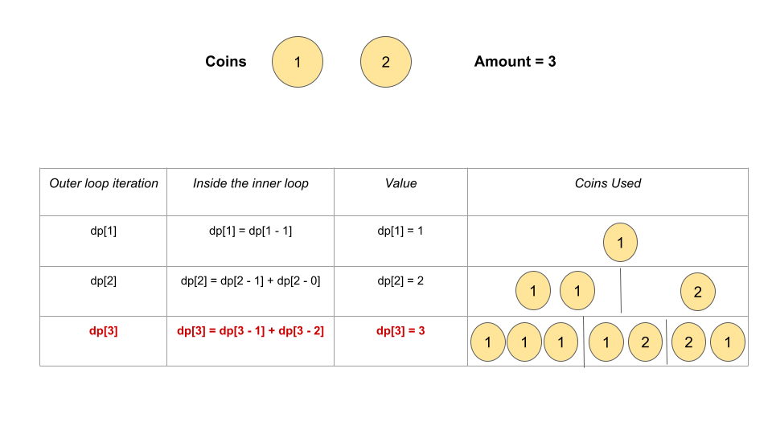

We are given an integer array coins representing coins of different denominations and an integer amount
representing the total amount of money.
Our task is to return the number of unique combinations that make up that amount. We can assume that we have an infinite number of each kind of coin.
This is a classical dynamic programming problem. If you are new to Dynamic Programming, please see our Leetcode Explore Card for more information on it!
Intuitively, we could think of iterating over the coins. For a specific coin, we have two options: either we take this coin and decrease the remaining amount we still need, or we ignore the coin and move to the next one without changing the remaining amount we still need. We add the number of ways to make up the required amount from both choices.
As we may notice, we are breaking down a larger problem into smaller, similar problems and adding the results of them
to get the answer to the original problem. If we choose to take a coin with value, we are now searching
for a combination of coins that sum up to amount - value. If we choose to skip the coin, we are still
looking for a combination of coins that sum up to amount, but with fewer coins.
As we are breaking down a larger problem into smaller, similar problems, we can use recursion to implement this approach.
Let numberOfWays be the recursive method that we use to solve the problem. It would require two
parameters: the index of the current coin under consideration i and the remaining amount
needed. It would return the number of ways to make up the amount by only considering the coins
beginning from index i.
If amount equals 0, we return 1 as we can always make up the 0
amount by not taking any coins.
If i equals n (where n is the number of coins), we return 0 as we
don't have any more coins and hence can't possibly make up the amount. These two form the base cases of our
recursive implementation.
The recursive relation can be written as:
If (coins[i] > amount) {
numberOfWays(i, amount) = numberOfWays(i + 1, amount)
} else {
numberOfWays(i, amount) = numberOfWays(i, amount - coins[i]) + numberOfWays(i + 1, amount)
}If the current coin is worth more than the remaining amount we need, we must skip the current coin. Otherwise, we consider both options: skip the current coin or use the current coin.
Let's take an example where we have three coins, coins = [2, 2, 1], and amount = 6. The
recursion tree of this example using the above relation would look something like this:

The first integer indicates the index of the current coin under consideration, while the second number indicates how much amount we need to make up. In the above diagram, we don't use the current coin in the left branch and we use it to decrease the required amount by its value in the right branch.
We can observe that there are several repeating problems in this solution highlighted in red. Several subproblems,
such as (2, 4), (1, 4), (1, 2), etc., are solved multiple times in the
partial recursion tree shown above. If we draw the entire recursion tree, we can see that many subproblems are
solved repeatedly.
To avoid this issue, we store the solution of each sub-problem and when we encounter the same subproblem again, we simply refer to the stored result. This is called memoization.
As we know the current state of a sub-problem depends on the index of the current under consideration and the
remaining amount, we can use a 2D array memo. memo[i][j] stores the number of ways to make
up j using the coins beginning from index i.
Whenever we solve a subproblem, we store its answer in memo. We re-use it whenever it is required,
instead of solving it again and again.
memo with n rows and amount + 1 columns. We initialize
values to -1 to indicate a subproblem not being solved yet.
numberOfWays which takes two parameters: the index i
of the current coin under consideration and the remaining amount to be made up. It returns the
number of ways to make up the amount by using the coins starting from the index i till
the last coin.
amount == 0, return 1. We can choose one way by not selecting any coin to
make up an amount of 0.
i == n, we have no coins left to make up any amount. We return 0.memo[i][amount] != -1, we return memo[i][amount].
amount, we cannot use it.
We recursively call numberOfWays(i + 1, amount), set it equal to
memo[i][amount], and return it.
amount by both picking up the
current coin and ignoring it. Add up the values numberOfWays(i, amount - coins[i]) and
numberOfWays(i + 1, amount), store the result in memo[i][amount], and return
it.
numberOfWays(0, amount), the answer to the original problem.
Java
class Solution {
int[][] memo;
int[] coins;
public int numberOfWays(int i, int amount) {
if (amount == 0) {
return 1;
}
if (i == coins.length) {
return 0;
}
if (memo[i][amount] != -1) {
return memo[i][amount];
}
if (coins[i] > amount) {
return memo[i][amount] = numberOfWays(i + 1, amount);
}
memo[i][amount] = numberOfWays(i, amount - coins[i]) + numberOfWays(i + 1, amount);
return memo[i][amount];
}
public int change(int amount, int[] coins) {
this.coins = coins;
memo = new int[coins.length][amount + 1];
for (int[] row : memo) {
Arrays.fill(row, -1);
}
return numberOfWays(0, amount);
}
}
C++
class Solution {
public:
vector coins;
vector> memo;
int numberOfWays(int i, int amount) {
if (amount == 0) {
return 1;
}
if (i == coins.size()) {
return 0;
}
if (memo[i][amount] != -1) {
return memo[i][amount];
}
if (coins[i] > amount) {
return memo[i][amount] = numberOfWays(i + 1, amount);
}
memo[i][amount] = numberOfWays(i, amount - coins[i]) + numberOfWays(i + 1, amount);
return memo[i][amount];
}
int change(int amount, vector& coins) {
this->coins = coins;
memo = vector>(coins.size(), vector(amount + 1, -1));
return numberOfWays(0, amount);
}
};
Python3
class Solution:
def change(self, amount: int, coins: List[int]) -> int:
def numberOfWays(i: int, amount: int) -> int:
if amount == 0:
return 1
if i == len(coins):
return 0
if memo[i][amount] != -1:
return memo[i][amount]
if coins[i] > amount:
memo[i][amount] = numberOfWays(i + 1, amount)
else:
memo[i][amount] = numberOfWays(i, amount - coins[i]) + numberOfWays(i + 1, amount)
return memo[i][amount]
memo = [[-1] * (amount + 1) for _ in range(len(coins))]
return numberOfWays(0, amount)
Here nn
is the size of coins.
Time complexity: O(n⋅amount)O(n \cdot \text{amount}).
memo array.
Space complexity: O(n⋅amount)O(n \cdot \text{amount}).
We used memoization in the preceding approach to store the answers to subproblems to solve a larger problem. We can also use a bottom-up approach to solve such problems without using recursion. We build answers to subproblems iteratively first, then use them to build answers to larger problems.
We create a 2D list dp[n][amount] where dp[i][j] stores the number of ways to make up the
j amount using the coins beginning from index i. Note that here, dp[i][j] is
equivalent to numberOfWays(i, j) from the previous approach.
We initialize dp[i][0] = 1 for all values of i from 0 to n since
we can always make up the amount 0 by not selecting any coins. While moving from bottom to top, this
serves as the base case for our solution.
When converting a top-down solution to a bottom-up one, we need to iterate starting from the base cases. As such, we
will iterate i from n - 1 until 0 in the outer loop. It controls the index of
the current coin under consideration. For the inner loop, we iterate j from 1 until amount
to control the remaining amount to be made.
Each iteration inside the nested loop represents a state (i, j), which is equivalent to a function call
from the previous approach. As such, we can apply the exact same logic to calculate dp[i][j].
If coins[i] > j, we cannot use the current coin, so we set dp[i][j] = dp[i + 1][j].
Otherwise, if we can use the current coin, we add the number of ways to make up the amount j by both
selecting it and ignoring it. We set dp[i][j] = dp[i + 1][j] + dp[i][j - coins[i]].
After computing all the dp states in the nested loops, dp[0][amount] state stores the
answer, just like numberOfWays(0, amount) was the answer in the previous approach.
n and initialize it to the size of the coins array.dp with n + 1 rows and amount + 1 columns where
dp[i][j] stores the number of ways to make up the j amount using the coins starting
from index i.
dp[i][0] = 1 for all values of i as the base case.dp using two loops. The outer loop runs from i = n - 1 to 0. It
controls the index of the current coin under consideration. The inner loop runs from j = 1 to
amount and controls the amount to be made up. In the nested loops, we perform the following:
i exceeds j, we cannot use it. We
set dp[i][j] = dp[i + 1][j].
j by using the current coin and
ignoring it. We set dp[i][j] = dp[i + 1][j] + dp[i][j - coins[i]].
dp[0][amount].
Java
class Solution {
public int change(int amount, int[] coins) {
int n = coins.length;
int[][] dp = new int[n + 1][amount + 1];
for (int i = 0; i < n; i++) {
dp[i][0] = 1;
}
for (int i = 1; i <= amount; i++) {
dp[0][i] = 0;
}
for (int i = n - 1; i >= 0; i--) {
for (int j = 1; j <= amount; j++) {
if (coins[i] > j) {
dp[i][j] = dp[i + 1][j];
} else {
dp[i][j] = dp[i + 1][j] + dp[i][j - coins[i]];
}
}
}
return dp[0][amount];
}
}
C++
class Solution {
public:
int change(int amount, vector& coins) {
int n = coins.size();
vector> dp(n + 1, vector(amount + 1));
for (int i = 0; i < n; i++) {
dp[i][0] = 1;
}
for (int i = n - 1; i >= 0; i--) {
for (int j = 1; j <= amount; j++) {
if (coins[i] > j) {
dp[i][j] = dp[i + 1][j];
} else {
dp[i][j] = dp[i + 1][j] + dp[i][j - coins[i]];
}
}
}
return dp[0][amount];
}
};
Python3
class Solution:
def change(self, amount: int, coins: List[int]) -> int:
n = len(coins)
dp = [[0] * (amount + 1) for _ in range(n + 1)]
for i in range(n):
dp[i][0] = 1
for i in range(n - 1, -1, -1):
for j in range(1, amount + 1):
if coins[i] > j:
dp[i][j] = dp[i + 1][j]
else:
dp[i][j] = dp[i + 1][j] + dp[i][j - coins[i]]
return dp[0][amount]
Here nn
is the size of coins.
Time complexity: O(n⋅amount)O(n \cdot \text{amount}).
dp array.
dp table. Each state consumes O(1)O(1) time to compute. As a
result, it takes O(n⋅amount)O(n \cdot \text{amount}) to fill the dp table using two
nested loops.
Space complexity: O(n⋅amount)O(n \cdot \text{amount}).
The state transition, as we discussed in previous approaches, is:
dp[i][j] = dp[i + 1][j] + dp[i][j - coins[i]
Looking closely at this transition, we can see that to fill dp[i][j] for a specific i and
all values of j we only need the values from dp[i] and dp[i + 1]. Values from
older rows like i + 2, i + 3, etc. are no longer relevant.
We can optimize the previous solution by using just one 1D array dp of size amount + 1.
We would have an outer loop that selects the current coin under consideration from i = n - 1 to
0 similar to the previous approach. After the ithi^{th}
iteration of the outer loop, dp[j] would represent dp[i][j] from the previous approach.
We initialize dp[0] = 1 since we can always make up the amount 0 by not selecting any
coins. It acts as a base case. This is similar to setting dp[i][0] = 1 in the previous approach.
Now, consider that we have all of the values of row i + 1 in dp and that we now need to
compute the values of row i. We can begin an inner loop that iterates from j = coins[i] to
amount. The reason we don't need to consider values from j = 1 to coins[i] -
1 is because we cannot select the ithi^{th}
coin for those values of j.
In such cases, as we saw in the previous approach, dp[i][j] = dp[i + 1][j]. As a result, we don't need
to modify these values that were computed in the previous iteration.
We start an inner loop from j = coins[i] to amount. Now, we have two cases.
We ignore the current coin. The number of ways to make up the j amount ignoring the current coin is
already present in dp[j]. It is computed in the previous iteration (for row i + 1) and is
identical to the state dp[i + 1][j] of the previous approach.
When we choose the current coin, we add dp[j - coins[i]]. This is equivalent to adding dp[i][j -
coins[i]] from the previous approach.
So, we perform dp[j] += dp[j - coins[i]] to add both the cases (analogous to dp[i + 1][j]
and dp[i][j - coins[i]]).
After all iterations, dp[amount] stores the answer.
It is important to note that changing the order of the nested loops would produce an incorrect answer. We must iterate over the coins in the outer loop, not the amount.
If we change the ordering of the two loops, the outer loop would run from i = 1 to amount
and the inner loop would execute from j = n - 1 to 0. We would perform the same operation
dp[i] += dp[i - coins[j]] inside the loops. After the ithi^{th}
iteration, dp[i] would store all the ways to make up the amount i using all the coins.
Let's take an example where coins = [1, 2] and amount = 3. The correct answer for this case
is 2 (1 + 1 + 1 and 1 + 2).
However, if we look at the last iteration of the outer loop when i = 3, we will execute dp[3] =
dp[3] + dp[3 - 1] when the first coin is selected using the inner loop. dp[2] would be equal to
2 as there are two ways to make up amount 2 (1 + 1 and 2). This
way we selected two cases 1 + 1 + 1 and 1 + 2.
We also execute dp[3] = dp[3] + dp[3 - 2] when the second coin is selected. dp[1] would be
equal to 1 as there is just one way to make up amount 1. This way we counted the 1 +
2 case. We counted the 1 + 2 case twice. Here's a visual representation showing all the
dp states for this approach:

Overall, the returned answer would be 3 which is incorrect. Switching the ordering of the loops returns
all the permutations (1 + 1 + 1, 1 + 2, 2 + 1) as the answer instead of the
combinations where 1 + 2 and 2 + 1 are not considered as separate cases.
n and initialize it to the size of the coins array.dp of size amount + 1. Initialize dp[0] = 1 (analogous to
dp[i][0] = 1).
dp using two loops. The outer loop runs from i = n - 1 to 0. It
controls the index of the current coin under consideration. The inner loop runs from j = coins[i]
to amount and controls the amount to be made up. In the nested loops, we perform the following:
dp[j] += dp[j - coins[i]].dp[amount].
Java
class Solution {
public int change(int amount, int[] coins) {
int n = coins.length;
int[] dp = new int[amount + 1];
dp[0] = 1;
for (int i = n - 1; i >= 0; i--) {
for (int j = coins[i]; j <= amount; j++) {
dp[j] += dp[j - coins[i]];
}
}
return dp[amount];
}
}
C++
class Solution {
public:
int change(int amount, vector& coins) {
int n = coins.size();
vector dp(amount + 1);
dp[0] = 1;
for (int i = n - 1; i >= 0; i--) {
for (int j = coins[i]; j <= amount; j++) {
dp[j] += dp[j - coins[i]];
}
}
return dp[amount];
}
};
Python3
class Solution:
def change(self, amount: int, coins: List[int]) -> int:
n = len(coins)
dp = [0] * (amount + 1)
dp[0] = 1
for i in range(n - 1, -1, -1):
for j in range(coins[i], amount + 1):
dp[j] += dp[j - coins[i]]
return dp[amount]
Here nn
is the size of coins.
Time complexity: O(n⋅amount)O(n \cdot \text{amount})
dp array takes O(amount)O(\text{amount})
time.
Space complexity: O(amount)O(\text{amount})
dp array take O(amount)O(\text{amount})
space.